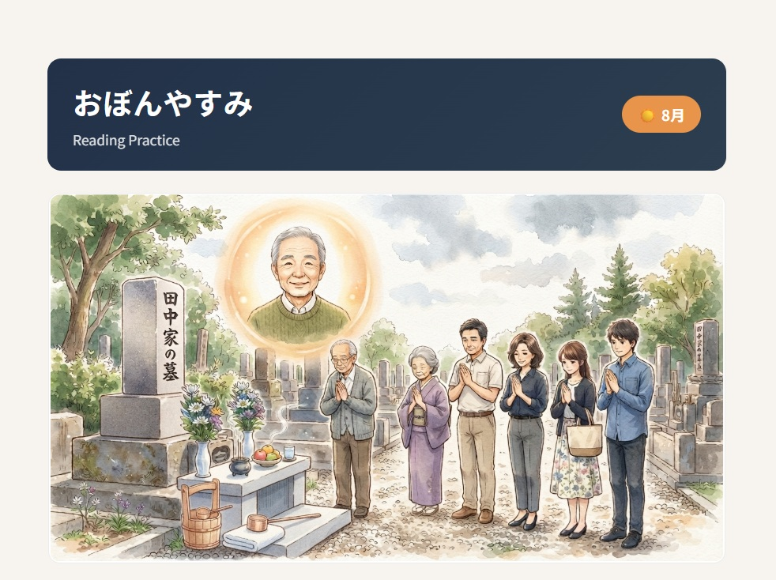
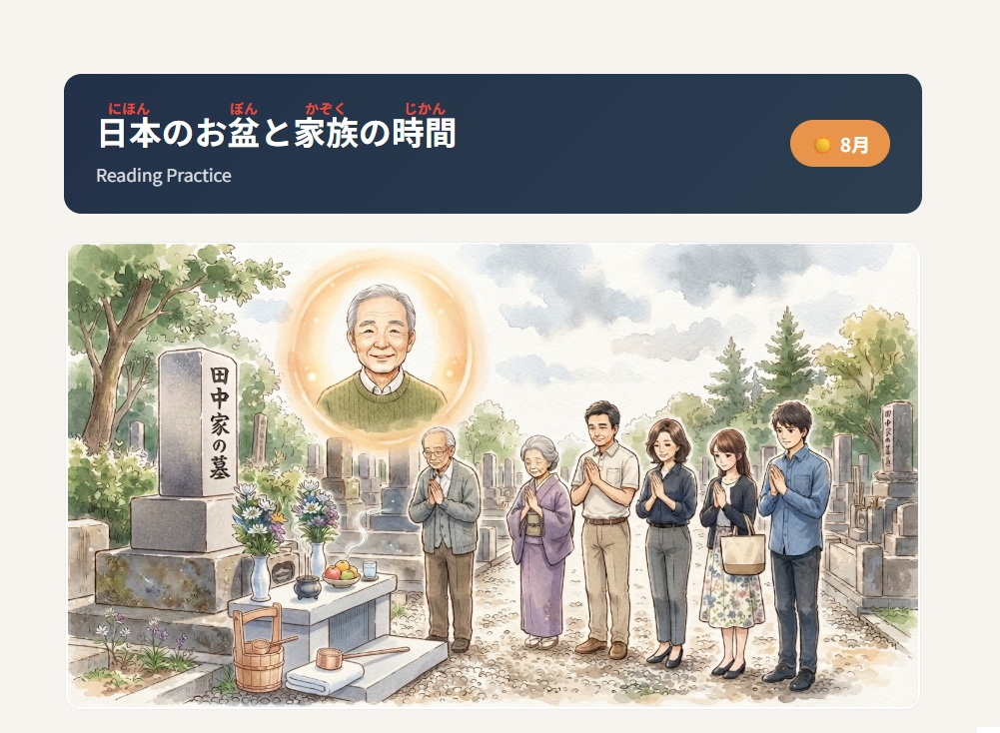

Three short Japanese reading passages about Obon, a traditional Japanese holiday in August. Learn about returning home, visiting family graves, and spending time with family.

A simple story about Obon — a traditional Japanese holiday when ancestors return home and families spend time together. Written entirely in hiragana, perfect for early learners.
Open worksheet →A story about taking the Shinkansen back to your hometown for Obon, visiting family graves with relatives, and enjoying summer together, featuring kanji and furigana readings.
Open worksheet →
A longer story about the Japanese Obon holiday, returning to the family home, visiting a family grave, and remembering loved ones. Includes reading comprehension questions and an English translation.
Open worksheet →